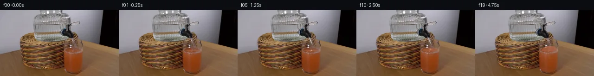

![首帧]()

Round 00
2026-11-05T11:07:10.356793+00:00像素候选变化代码 +249/−0inspection 更新
pixels 57a6a7c9e5fd6d00 · code b5365129cbd9ec89
查看本轮 generate.py 真实 diff
--- previous/generate.py
+++ current/generate.py
@@ -0,0 +1,249 @@
+from pathlib import Path
+import numpy as np
+from PIL import Image, ImageDraw, ImageFilter
+
+from artifact_io import save
+
+
+ROOT = Path(__file__).resolve().parent
+W, H = 256, 144
+AA = 4
+
+
+def smoothstep(x):
+ x = np.clip(x, 0.0, 1.0)
+ return x * x * (3.0 - 2.0 * x)
+
+
+def composite(base, layer, alpha):
+ """Alpha composite uint8 RGB layer through a float 0..1 mask."""
+ a = np.clip(alpha, 0.0, 1.0)[..., None]
+ return np.clip(base.astype(np.float32) * (1.0 - a) + layer.astype(np.float32) * a, 0, 255).astype(np.uint8)
+
+
+def interior_bounds(y):
+ """Hand-measured inner glass walls at a given scanline."""
+ if y <= 79:
+ return 152.0, 171.5
+ if y <= 84:
+ q = (y - 79.0) / 5.0
+ return 152.0 - 6.5 * q, 171.5 + 4.0 * q
+ if y <= 90:
+ q = (y - 84.0) / 6.0
+ return 145.5 - 4.0 * q, 175.5 + 1.7 * q
+ if y <= 128:
+ q = (y - 90.0) / 38.0
+ return 141.5 - 0.5 * q, 177.2 - 0.4 * q
+ q = np.clip((y - 128.0) / 7.0, 0, 1)
+ return 141.0 + 5.0 * q, 176.8 - 5.0 * q
+
+
+def liquid_mask(level):
+ """Antialiased mask tightly inside the visible receiving glass."""
+ im = Image.new('L', (W * AA, H * AA), 0)
+ d = ImageDraw.Draw(im)
+ pts_left, pts_right = [], []
+ for y in np.linspace(level, 135, 57):
+ left, right = interior_bounds(y)
+ pts_left.append((int(round(left * AA)), int(round(y * AA))))
+ pts_right.append((int(round(right * AA)), int(round(y * AA))))
+ poly = pts_left + list(reversed(pts_right))
+ d.polygon(poly, fill=255)
+ # A gently curved liquid meniscus.
+ left, right = interior_bounds(level)
+ d.ellipse((int(left * AA), int((level - 1.15) * AA),
+ int(right * AA), int((level + 2.2) * AA)), fill=255)
+ return np.asarray(im.resize((W, H), Image.Resampling.LANCZOS), dtype=np.float32) / 255.0
+
+
+def draw_stream(frame, t, level):
+ """Draw a small antialiased translucent stream, droplets, and impact glint."""
+ rgba = Image.new('RGBA', (W * AA, H * AA), (0, 0, 0, 0))
+ d = ImageDraw.Draw(rgba)
+ # Outlet is at (153,58); the receiving mouth is centered near (160,70).
+ if t == 1:
+ d.ellipse((152.2*AA, 57.4*AA, 154.3*AA, 60.2*AA), fill=(218, 221, 212, 150))
+ elif t == 2:
+ d.ellipse((153.0*AA, 58.2*AA, 155.0*AA, 61.3*AA), fill=(216, 218, 207, 170))
+ d.ellipse((155.2*AA, 64.1*AA, 157.0*AA, 67.0*AA), fill=(210, 211, 198, 140))
+ elif 3 <= t <= 15:
+ strength = smoothstep((t - 2) / 3.0) * (1.0 - 0.34 * smoothstep((t - 12) / 3.0))
+ sway = 0.38 * np.sin(t * 0.82)
+ points = []
+ for k in range(17):
+ q = k / 16.0
+ x = 153.4 + 6.0*q + (0.45+sway)*q*(1-q) + 0.12*np.sin(t*0.7+q*7)
+ y = 58.2 + (min(level - 0.3, 72.5) - 58.2)*q
+ points.append((int(x*AA), int(y*AA)))
+ width = max(3, int((1.35 + 0.75 * strength) * AA))
+ d.line(points, fill=(92, 83, 69, 75), width=width + 2, joint='curve')
+ d.line(points, fill=(202, 201, 187, 165), width=width, joint='curve')
+ hi = [(x - 1, y) for x, y in points]
+ d.line(hi, fill=(235, 235, 222, 112), width=max(2, width // 3), joint='curve')
+ # Occasional bright beads carried within the connected flow.
+ bead_q = (t * 0.47) % 1.0
+ bx = 153.4 + 6.0 * bead_q
+ by = 58.2 + (min(level - .3, 72.5) - 58.2) * bead_q
+ d.ellipse(((bx-.65)*AA, (by-.9)*AA, (bx+.75)*AA, (by+1.0)*AA), fill=(231,231,218,120))
… diff truncated; 162 more lines …